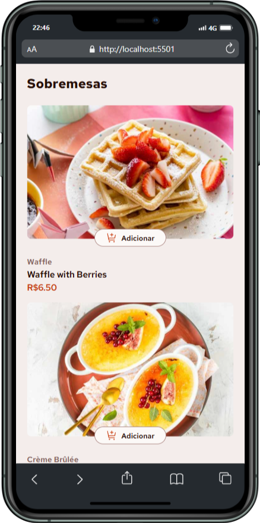
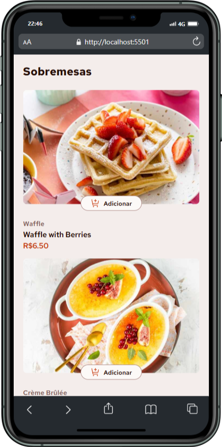

Carrinho Doce
 

Sobre o projeto
Uma solução para lista de compras
Um projeto simples e direto ao ponto, focado em renderizar uma lista de produtos e permitir que o usuário adicione e remova itens de um carrinho.
Esse desafio foi retirado da plataforma Frontend Mentor, utilizando
os arquivos visuais fornecidos por eles como base. O layout foi
interpretado "no olho", sem uso de Figma. O foco foi praticar HTML,
CSS e JavaScript puro, com dados dos produtos carregados
dinamicamente a partir de um arquivo data.json.
Ferramentas Usadas
HTML, CSS, Javascript
Baseado nos arquivos visuais fornecidos pelo Frontend Mentor.
Cronograma
2 dias (março-2025)
Recursos & Experiência
- Adicionar e remover itens: Usuários podem adicionar produtos ao carrinho e removê-los com um clique, controlando seus pedidos facilmente.
- Controle de quantidade: É possível aumentar ou diminuir a quantidade de cada item.
- Acessibilidade visual: Os elementos interativos possuem estados de hover e foco bem definidos para melhor usabilidade e acessibilidade.
- Modal de confirmação: Ao clicar em "Confirmar Pedido", o usuário vê um modal de confirmação, trazendo feedback visual claro da ação.
- Reset do carrinho: Clicando em "Novo Pedido", todas as seleções são reiniciadas para facilitar um novo processo de compra.
- Layout responsivo: A interface se adapta a diferentes tamanhos de tela, garantindo uma boa experiência tanto no desktop quanto no mobile
Desafio e Aprendizado
Desafios
- Manter a organização do DOM com manipulação direta via JavaScript sem frameworks.
- Gerenciar a lógica do carrinho com atualização em tempo real e evitar bugs com quantidade negativa.
O que aprendi
-
Refinei a lógica condicional com JavaScript puro e pratiquei a
manipulação de classes e elementos com
createElementeclassList. - Aprendi a estruturar meu código de forma mais modular, separando responsabilidades entre HTML, CSS e JS
Processo criativo
O design foi feito com base visual nos arquivos do Frontend Mentor, sem uso do Figma ou wireframes formais. Ajustei tudo visualmente, focando na responsividade e na organização do conteúdo. O projeto foi feito no modo claro, sem suporte a dark mode.
O Projeto Final
O resultado é uma aplicação leve, funcional e responsiva, desenvolvida com HTML, CSS e JavaScript puro. O projeto foi baseado em um desafio do site Frontend Mentor e simula uma loja online com carrinho de compras interativo. Todo o layout foi interpretado visualmente, sem arquivos de design como Figma, o que reforçou a prática de atenção aos detalhes e construção manual da interface.